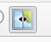
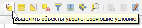
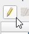
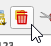

Шпаргалка: структура файлов Sentinel-2
Снимок, скачанный с Copernicus Browser, — это набор папок и файлов. Нас интересует только небольшая часть из них.
Путь к данным выглядит примерно так:
└── GRANULE
└── L2A_T36VUN_...
└── IMG_DATA
├── R10m ← 10 м/пиксель
├── R20m ← 20 м/пиксель
└── R60m ← 60 м/пиксель
Каналы в папке R10m (основные для работы):
| Файл | Канал | Диапазон | Для чего полезен |
|---|---|---|---|
| ..._B02_10m.jp2 | B02 — Синий | 490 нм | Естественные цвета, водные объекты |
| ..._B03_10m.jp2 | B03 — Зелёный | 560 нм | Естественные цвета, растительность |
| ..._B04_10m.jp2 | B04 — Красный | 665 нм | Естественные цвета, расчёт NDVI |
| ..._B08_10m.jp2 | B08 — Ближний ИК (NIR) | 842 нм | Расчёт NDVI, ложные цвета |
Каналы в папке R20m (для бонусного задания):
| Файл | Канал | Диапазон | Для чего полезен |
|---|---|---|---|
| ..._B11_20m.jp2 | B11 — SWIR | 1610 нм | Застройка, голый грунт, влажность |
T36VUN_20240715T083559_B04_10m.jp2. Ориентируйтесь на
фрагмент B02, B03,
B04, B08 в названии — это номер
канала.
Часть 1
Комбинации каналов (~30 мин)
Каждый канал Sentinel-2 — это отдельное изображение в градациях серого. Чтобы получить цветную картинку, нужно совместить несколько каналов, назначив каждому свой цвет: красный, зелёный, синий (RGB). В зависимости от выбранных каналов получим разные «взгляды» на территорию.
Шаг 1 — Загрузите каналы
- Откройте QGIS и создайте новый проект.
-
Перейдите в папку снимка, найдите подпапку
R10m (путь:
GRANULE → … → IMG_DATA → R10m). - Перетащите в окно QGIS файлы каналов B02, B03, B04, B08.
Каждый канал откроется как отдельный серый слой — это нормально.

Шаг 2 — Соберите изображение в естественных цветах
- Откройте меню Растр → Прочее → Создать виртуальный растр (Build Virtual Raster).
- Во входных слоях выберите B04, B03, B02 — именно в таком порядке.
- Поставьте галочку «Разместить каждый входной файл в отдельный канал» (Place each input file into a separate band).
- Нажмите «Выполнить».
Появится новый слой. Откройте его свойства (правый клик → Свойства → Символика):
- Тип отображения: Многоканальное цветное (Multiband color).
- Назначьте: Red = Band 3 (B04), Green = Band 2 (B03), Blue = Band 1 (B02).
- Нажмите OK.
Результат — изображение в естественных цветах. Вы увидите знакомые виды: Тверь, Волгу, леса и поля.

Шаг 3 — Соберите изображение в ложных цветах
- Повторите процедуру создания виртуального растра, но теперь выберите каналы: B08, B04, B03.
- Не забудьте поставить галочку «Разместить каждый входной файл в отдельный канал».
- В символике назначьте: Red = Band 3 (B08), Green = Band 2 (B04), Blue = Band 1 (B03).

Шаг 3.1 — Установите плагин MapSwipe Tool
Переключать видимость слоёв вручную — неудобно. Плагин MapSwipe Tool позволяет «разрезать» экран шторкой и видеть два слоя одновременно.
- Меню Модули → Управление и установка модулей.
- В строке поиска введите MapSwipe Tool.
- Нажмите «Установить».
-
После установки на панели инструментов появится иконка плагина

. Нажмите на неё. - Убедитесь, что слой с ложными цветами находится выше слоя с естественными цветами в панели слоёв.
- Двигайте курсор по карте — шторка будет открывать нижний слой.

Часть 2
Расчёт NDVI (~25 мин)
NDVI (Normalized Difference Vegetation Index) — вегетационный индекс, который показывает состояние растительности. Значения варьируются от −1 до +1:
| Значение NDVI | Что это |
|---|---|
| меньше 0 | Вода, облака, снег |
| 0 – 0.2 | Голый грунт, застройка, дороги |
| 0.2 – 0.4 | Разреженная растительность, газоны |
| 0.4 – 0.6 | Умеренная растительность |
| 0.6 – 1.0 | Густая здоровая растительность |
Формула:
Шаг 4 — Откройте Растровый калькулятор
- Меню Растр → Растровый калькулятор (Raster Calculator).
- В поле выражения введите формулу. Имена слоёв вставляйте двойным кликом из списка слева:
- Укажите имя выходного файла, например: NDVI_Tver.tif.
- Нажмите OK.

Шаг 5 — Раскрасьте результат
- Правый клик по слою NDVI → Свойства → Символика.
- Тип отображения: Одноканальное псевдоцветное (Singleband pseudocolor).
- Интерполяция: Линейная.
- Цветовая рампа: выберите RdYlGn (красный → жёлтый → зелёный).
- Установите Min = -0.4, Max = 0.8.
- Нажмите «Классифицировать», затем OK.
Результат — карта состояния растительности. Леса окрашены в зелёный, вода — в красный/тёмный, застройка — в жёлто-коричневый.

Часть 3
Пороговая классификация (~20 мин)
Теперь из непрерывной шкалы NDVI мы создадим простую карту: растительность / не растительность. Для этого зададим пороговое значение — если NDVI выше порога, считаем пиксель растительностью.
Шаг 6 — Создайте маску растительности
- Снова откройте Растр → Растровый калькулятор.
- Введите формулу:
- Укажите имя выходного файла: Vegetation_mask.tif.
- Нажмите OK.
Получится бинарный растр: 1 = растительность, 0 = всё остальное.

Шаг 7 — Раскрасьте маску
- Правый клик по слою → Свойства → Символика.
- Тип отображения: Палитра / уникальные значения (Paletted / Unique values).
- Нажмите «Классифицировать».
- Назначьте цвета: 0 — прозрачный, 1 — зелёный.
- Нажмите OK.

Шаг 8 — Поэкспериментируйте с порогом
Попробуйте повторить Шаг 6 с другими пороговыми значениями: 0.2, 0.4, 0.5. Сравните результаты.
Бонус 1
Подложка Yandex Satellite
Сравним нашу маску растительности со снимком высокого разрешения. Для этого подключим спутниковую подложку через плагин QuickMapServices.
Шаг 1 — Установите плагин
- Меню Модули → Управление и установка модулей.
- В строке поиска введите QuickMapServices.
- Нажмите «Установить».
Шаг 2 — Подключите дополнительные источники
По умолчанию плагин содержит только базовый набор подложек. Чтобы получить доступ к Yandex, Google и другим сервисам:
- Меню Интернет → QuickMapServices → Поиск в NextGis QMS.
- Перейдите на вкладку Поиск в NextGis QMS.
Шаг 3 — Добавьте подложку
- В окне поиска введи yandex.
- В панели поиска выбери подложку Yandex Satellite 26, добавь ее на карту и расположи ниже всех остальных слоёв.
Бонус 2
Из растра в полигоны
Пока наша маска растительности — это растр (сетка пикселей). Но для многих задач удобнее работать с векторными полигонами: их можно редактировать, измерять площадь, экспортировать в другие форматы. Превратим растр в вектор одним инструментом.
Шаг 1 — Векторизуйте маску
-
Меню Растр → Преобразование → Полигонизация
(Растр в вектор)
(Raster → Conversion → Polygonize (Raster to Vector)). - Входной слой: выберите Vegetation_mask (ту маску, с порогом, который вам больше понравился).
- Имя поля со значением оставьте по умолчанию (DN).
- Нажмите «Выполнить».
Появится новый векторный слой с полигонами. Каждый полигон имеет атрибут DN: значение 1 — растительность, 0 — всё остальное.
Шаг 2 — Уберите лишнее
Нам интересна только растительность (DN = 1). Удалим остальное:
- Правый клик по векторному слою → Открыть таблицу атрибутов.
-
Нажмите кнопку «Выбрать объекты с помощью
выражения»

(жёлтый квадрат с буквой ε). - Введите выражение:
"DN" = 0 - Нажмите «Выбрать объекты» → закройте окно.
-
Включите режим редактирования

(карандаш на панели) → нажмите «Удалить выбранные»
→ сохраните изменения → выключите режим редактирования.
Бонус 3
Плагин Value Tool
Если осталось время — установим плагин, который показывает значения всех каналов при наведении курсора на карту.
- Меню Модули → Управление и установка модулей.
- В строке поиска введите Value Tool.
- Нажмите «Установить».
- После установки включите панель: Вид → Панели → Value Tool.
Задание: наведите курсор на разные объекты — вода, лес, поле, застройка, дорога — и запишите значения каналов B02, B03, B04, B08 для каждого типа. Видите закономерности?
Бонус 4
Индекс застройки NDBI
NDBI (Normalized Difference Built-up Index) — индекс, который выделяет застроенные территории и голый грунт. Использует коротковолновый инфракрасный канал B11 (SWIR) из папки R20m.
Шаг 1 — Загрузите канал B11
Перетащите в проект файл B11 из папки R20m.
Шаг 2 — Рассчитайте NDBI
Откройте Растровый калькулятор и введите:
Выходной файл: NDBI_Tver.tif.
Шаг 3 — Раскрасьте и сравните
Раскрасьте NDBI аналогично NDVI (псевдоцветное отображение). Используйте MapSwipe Tool, чтобы сравнить NDVI и NDBI шторкой: поместите NDBI выше NDVI в панели слоёв и активируйте плагин.
Что мы узнали
- Познакомились со структурой данных Sentinel-2 и мультиспектральными каналами.
- Собрали цветные изображения из отдельных каналов (естественные и ложные цвета).
- Рассчитали вегетационный индекс NDVI и увидели, как из снимка извлекается тематическая информация.
- Выполнили пороговую классификацию и поняли, что «классификация» — это решение исследователя.
Все эти операции — базовые приёмы дистанционного зондирования, которые применяются в самых разных задачах: от мониторинга лесов и сельского хозяйства до городского планирования.